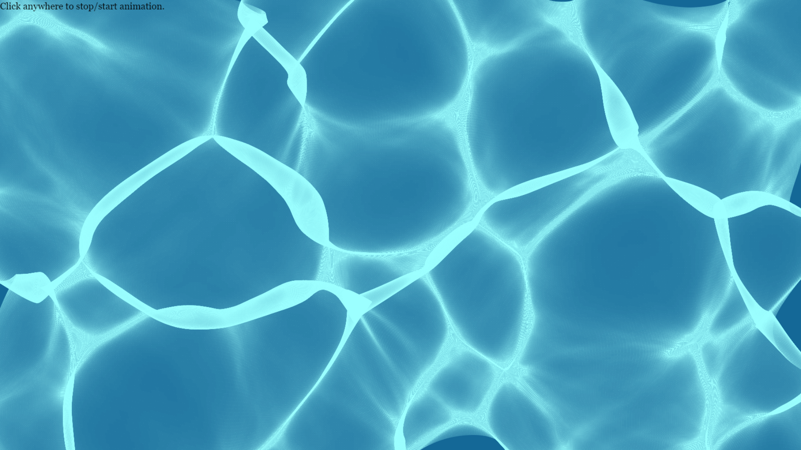

How the caustics are made
A four-step walkthrough of the same code that draws the animation, building the final image up from nothing.

1 Start with a grid of light
The incoming sunlight is modelled as a regular grid of squares, each one a patch of light hitting the water. If the surface were perfectly flat, every patch would land on the pool floor exactly where it started — an undistorted grid, and no caustics at all.
2 Waves bend every corner
The water's surface is really a sum of 361 cosine waves rippling across the pool (see
src/waves.js). What bends light is the slope of that surface, so for every grid
corner the code works out a refraction offset — how far that ray gets pushed sideways by the time it
reaches the bottom. Nudging each corner by its own offset turns every flat square into a slightly warped
quadrilateral.
3 Squeezed quads are bright, stretched ones are dim
Neighbouring corners don't all move by the same amount, so some squares get squeezed into a small
quadrilateral — the same patch of light packed into less area — while others get stretched thin. Area and
brightness are inversely related: alpha = min(BRIGHTNESS / area, 1). Every quad below is
shaded grey by its own alpha, so the pattern of compression and dispersion is visible on its own, without
the pool's colour.
4 Zoom in, add colour, and let it move
The live page runs exactly those steps — refract, measure area, shade — but on a much finer grid (a few pixels per cell instead of tens), tinted the colour of pool water, with the wave field animating over time. That finer grid is what turns the blocky pattern above into the smooth, rope-like caustics from the top of this page. Click it to pause.